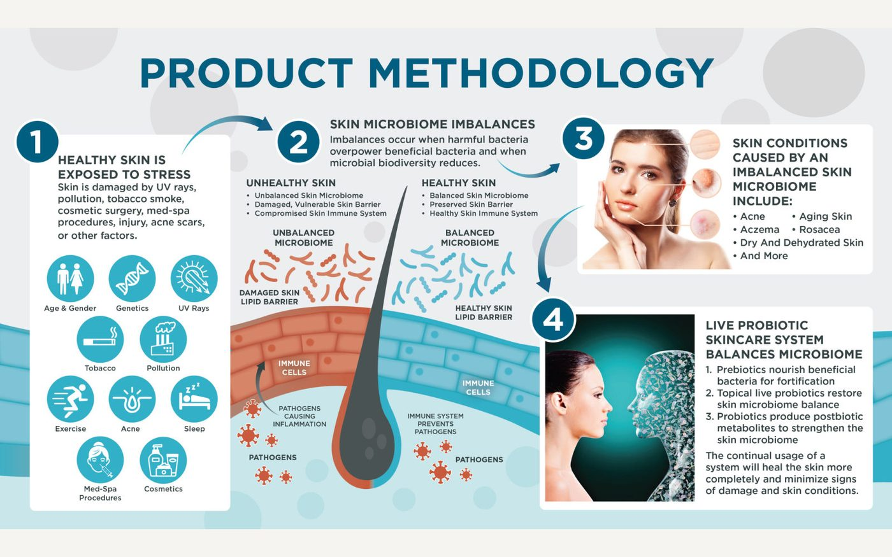
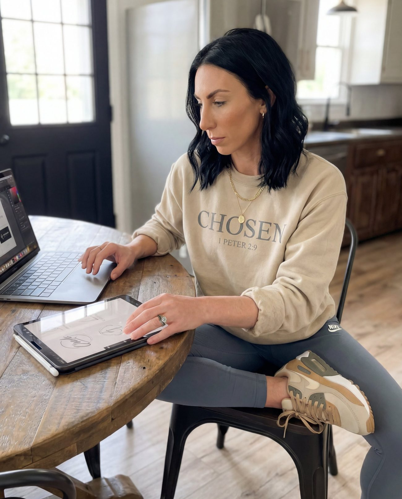

Instructional design
Objectives, storyboards, assessments, and learning paths built around real performance needs.
01 Instructional design · content strategy
KB Designs / Katlyn Brown
I turn complex information into learning, content, and digital experiences that are clear to use and hard to forget.


Featured case study
A practical look at how scattered subject-matter expertise became a clear, learner-centered online course.
02 Selected work
A selection of learning, brand, and content work. Choose a category or open a project for the short version of the brief.
03 The library
Explore a selection of real-world learning materials, work samples, and resource design.
04 How I work
Every project begins with the people who need to use it. Then the right mix of learning science, storytelling, and design brings it to life.
Objectives, storyboards, assessments, and learning paths built around real performance needs.
Interactive, SCORM-ready experiences made to work smoothly in real learning ecosystems.
Clear, human brand language that gives ideas structure and momentum.
Practical onboarding, product education, and professional development people can use.
Thoughtful systems, assets, and collateral that make a message feel intentional.
Targeted solutions grounded in the gap between what people know and what they do.
The ADDIE framework

Professional by practice.
Creative by nature.
05 A little background
I’m Katlyn — an instructional designer and content strategist with a background in education, marketing, and creative design.
I pair adult learning theory and the ADDIE model with a grounded visual point of view. The result is work that respects people’s time, makes complex things feel manageable, and gives brands a distinctive way to show up.
Based in Madisonville, Kentucky. Curious by default. Clear by design.
See the full résumé06 Start a conversation
Whether you need a learning experience, a stronger content system, or an extra design brain, I’d love to hear what you’re working on.
katyrbrown96@gmail.com